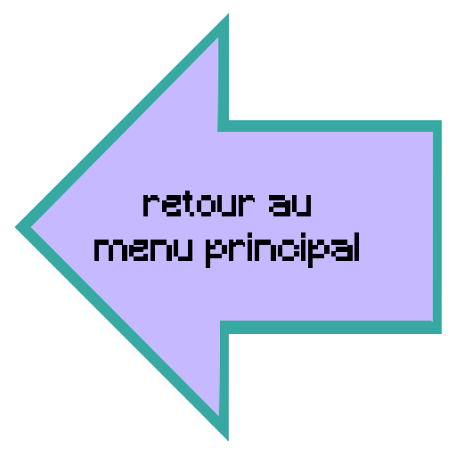

Mon portfolio
Voici le sommaire de mes projets, cliquer sur une catégorie pour aller directement à cette partie
A propos de Youtube
 J'ai une chaine Youtube sur laquelle je poste un montage environ une fois par mois. Cette série de montage s'appelle "0 gsp"
J'utilise le logiciel Sony vegas pro 15 pour le montage et Photoshop pour les miniatures.
Les vidéo et description sont en anglais car je vise un public international.
J'ai une chaine Youtube sur laquelle je poste un montage environ une fois par mois. Cette série de montage s'appelle "0 gsp"
J'utilise le logiciel Sony vegas pro 15 pour le montage et Photoshop pour les miniatures.
Les vidéo et description sont en anglais car je vise un public international.
Ma Chaine Youtube
Exemple de miniature (pour mario dans ce cas)
A propos de Utopia
"Utopia" est un jeu de cartes en ligne multijoueur.
C'est un projet sur lequel je travaille avec un ami. Celui-çi programme le jeu et je m'occupe de tous les éléments de gamedesign (puissance des différantes cartes, changement des règles...).
Screenshot de la beta
Screenshot de la alpha
A propos de STI2D
 Je suis élève en Terminale STI2D, ce qui veut dire que j'ai participé à plusieurs projets au cours de ma formation. Par exemple, la création d'un poulailler automatique sur lequel je me suis occupé du capteur de nourriture.
Un autre projet nous a permis de travailler sur l'installation d'une station météo dans notre lycée.
Ces projets m'ont permis d'apprendre à gérer un travail en groupe et d'organiser l'emploi du temps pour un projet collectif.
Je suis élève en Terminale STI2D, ce qui veut dire que j'ai participé à plusieurs projets au cours de ma formation. Par exemple, la création d'un poulailler automatique sur lequel je me suis occupé du capteur de nourriture.
Un autre projet nous a permis de travailler sur l'installation d'une station météo dans notre lycée.
Ces projets m'ont permis d'apprendre à gérer un travail en groupe et d'organiser l'emploi du temps pour un projet collectif.
le distributeur sur lequel j'ai rajouté un capteur
La station qui a été installée
